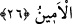

Mûsâ (a.s.), Firavun’un yanında zâhirî nimetlerle yetişip büyüdü. Allah için hicret
edip de sefer ve gurbetin zorluk ve meşakkatlerine katlanınca Allah ona karşılık olarak
Şuayb (a.s.)’ın yanında zâhir ve bâtın nimetiyle ikramda bulundu.
Denilmiştir ki:
Yolculuk yap, ayrılmadan dolayı bir karşılık bulursun.
Yorul, çünkü şeref kazanmak yorulmaktadır.
Arslan, yaşadığı ormandan ve ininden ayrılmasaydı avlanmazdı.
Ok, yayından ayrılmasaydı isâbet etmezdi.
Yine denilmiştir ki:
Allah’ın diyarları geniştir, sonsuzdur.
Allah’ın rızkı dünyada yaygındır.
Oturanlara de ki: Bana kolaydır, önemsizdir.
Size bir yer daraldığı zaman, gezin, dolaşın.
Şeyh Sa’dî (k.s.) der ki:
Ey Sa’dî! Vatan sevgisine dâir sahih hadis varsa da
Ben burada doğdum, diyerek sıkıntı içinde ölmek doğru değildir
Bilindiği gibi Mûsâ (a.s.) Mısır’da doğdu, burası ona dar gelince Medyen diyârına
hicret etti ve orada mutlak bir genişlik buldu. Dolayısıyla kâmil bir kimse için zaman ve
mekân mefhûmu olmaz. Bilakis o, kendi vatanında da olsa, mahlûkâta boyun eğmeden
Allah’ın emrettiği yere gider, dolaşır. Zira Allah Teâlâ kişi ile beraber olunca, gurbet
onun vatanı olur; dar yer de onun için genişler. Mesnevî’de der ki:
Sultanımız nereyi mesken tutmuşsa,
İğne deliği kadar bile olsa bizim için ovadır
Ay misali Yusuf ’un olduğu yer,
Kuyunun dibi bile olsa cennettir
26. (Şuayb’ın) iki kızından biri: Babacığım! Onu ücretle (çoban) tut. Çünkü
ücretle istihdam edeceğin en iyi kimse, güçlü ve güvenilir olandır, dedi.
Burada zikredilen kız, Mûsâ (a.s.)’ı babasına çağıran ve Mûsâ (a.s.)’ın da daha sonra